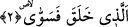

döndürmesini ister. Bunu Ebu’l-Leys tefsirinde bizlere nakletmektedir.
Peygamber (s.a.) bir gün Cebrâil’e şöyle der: “Ya Cebrâil! Bana namazında veya
namazının dışında “Subhane Rabbiye’l-a’la” diyen kimsenin erişmiş olduğu sevabı
haber verir misin?” Cebrâil şöyle cevap verir: ‘Ya Muhammed! Namazında,
secdesinde veya namaz dışında bu duâyı okuyan hiçbir kadın ve erkek mü’min yoktur ki
onu okusun da mizanı arştan, kürsiden, dünya dağlarından daha ağır gelmiş olmasın’.
Allah Teâlâ şöyle der: Benim kulum “subhane Rabbiye’l-a’la” demekle doğru söylüyor.
Ben en yüceyim ve herşeyin üzerindeyim. Benim üzerimde olan hiçbir şey yoktur. Ey
meleklerim sizler şâhid olun. Ben bu kulumu bağışladım ve onu Cennetime koydum. Bu
kul öldüğü zaman Mikail her gün kendisini ziyaret eder. Kıyamet günü gelince onu
kanatlarının üzerine alıp taşıyarak getirir ve Allah’ın huzurunda divan durdurur ve
Mikail şöyle der: Ya Rabbi bu kulun hakkında bana şefaat yetkisi ver. Allah da ona
şöyle cevap verir: Onun hakkında sana şefaat yetkisi verdim onu al ve Cennete götür.”
[73] Bu haberi İbnu’ş-Şeyh Havaşi’sinde zikreder.
Bir hadis-i şerifte şu ifâdeyi görüyoruz: “Subhanallahi ve’l-hamdu lillahi duâsı
göklerle yerin arasını doldurur.” [74] Çünkü bu iki kelime Allah Teâlâ’ya övgünün
kemalini içerdiği gibi, eserleri göklerde, yerde ve her ikisi arasında zâhir olan zâtî ve
fiili sıfatlarını tanıtır.
Kâşânî der ki: Allah’ın en yüce ve en büyük ismi bütün sıfatlarıyla birlikte zâtıdır.
Âyete geri dönersek şöyle denmiş oluyor: Ey kul sen zâtını Hak’tan başka herşeyden
uzak kalarak tenzih et. Allah’tan başka şeylere bakmaktan bakışlarını alakoy ki üzerinde
hakkani kemâlât tümüyle ortaya çıksın. İşte bu o kulun fena makamında kendine has
tesbihidir. Çünkü bütün ilahi sıfatları kabul etmeye yetenekli olan tam isti’dad ancak ve
ancak onun için olur ve onun zâtı, onun kemaline eriştiğinde en yüce ismidir. Herşeyin
özel bir tesbihi vardır ve o her nesne bu özel tesbihi ile Rabbının isimlerinden hâlis
olan bir ismi tesbih eder.
2. Ki O yaratıp, düzene koymuştur,
Bu cümle yukarda geçen “rabb” kelimesinin -birinci açıklama tarzımıza göre-
sıfatıdır. -İkinci açıklamamıza göre- medh ve övgü ifâde ettiği için mansubtur. Buna
göre âyete mânâ verirsek; ki o her şeyi yaratıp kemalini elde edecek şeyleri vererek ve
geçimini sağlayacak şeyleri bahşederek yaratılışını düzgün yapmıştır.
Kâşânî şöyle der: Ki o senin zâhirîni yoktan var etmiş, bünyeni düzene koymuştur. O
şekilde düzenlemiştir ki bu bünye özel mizacı ile bütün kemâlâtı almaya hazır ve tam